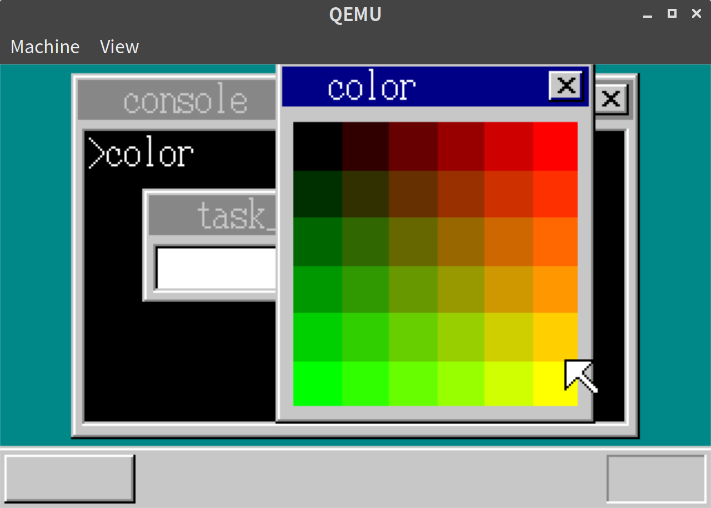
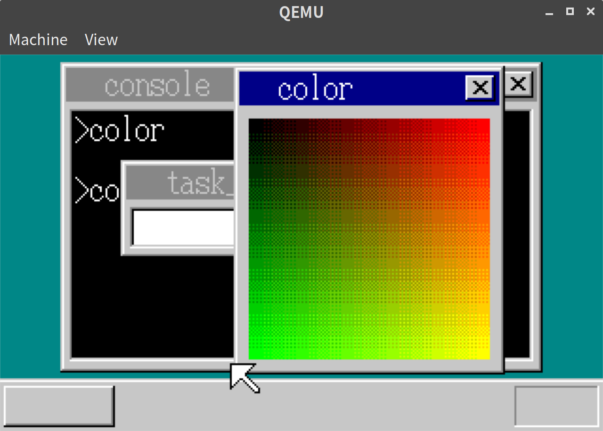
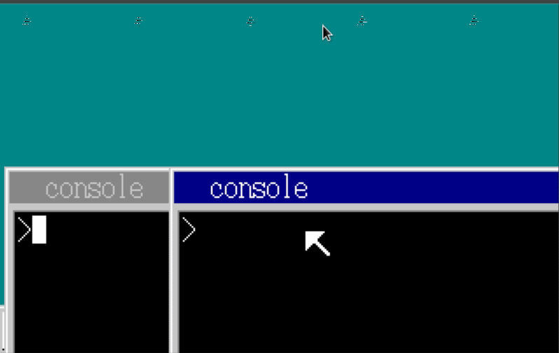
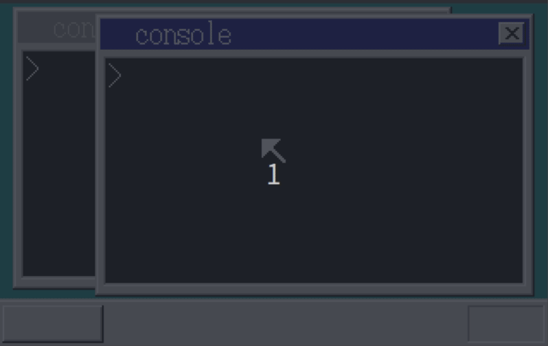

「30日でできる！OS自作入門」をRustで。25日目
「30日でできる！OS自作入門 」のC言語の部分をできるだけRustですすめてみる。今回は25日目の内容。
BEEP音をならす
BEEP音をならすシステムコールをつくる。
// console.rs
#[no_mangle]
pub extern "C" fn hrb_api(/*省略*/) -> usize {
// 省略
} else if edx == 20 {
if eax == 0 {
let i = in8(0x61);
out8(0x61, i & 0x0d);
} else {
let i = 1193180000 / eax;
out8(0x43, 0xb6);
out8(0x42, i as u8);
out8(0x42, (i >> 8) as u8);
let i = in8(0x61);
out8(0x61, (i | 0x03) & 0x0f);
}
}
0
}アプリ側は以下のようになる。(asmのコードは本と同じなので省略する)
// beepdown/src/lib.rs
[no_mangle]
#[start]
pub extern "C" fn hrmain() {
let timer_index = alloc_timer();
unsafe {
_api_inittimer(timer_index.clone(), 128);
}
let mut i = 20000000;
while i >= 20000 {
unsafe {
_api_beep(i);
_api_settimer(timer_index, 1);
}
if get_key(1) != 128 {
break;
}
i -= i / 100;
}
unsafe { _api_beep(0) };
end();
}QEMUの環境しか手元になく、実行できなかったが、一旦できたことにして次にいく。
パレットの追加
パレットの色を増やす。
// vga.rs
pub fn init_palette() {
let eflags = asm::load_eflags();
asm::cli();
asm::out8(0x03c8, 0);
for i in 0..16 {
// 書き込むときは上位2ビットを0にしないといけない。See: http://oswiki.osask.jp/?VGA#o2d4bfd3
asm::out8(0x03c9, COLOR_PALETTE[i][0] / 4);
asm::out8(0x03c9, COLOR_PALETTE[i][1] / 4);
asm::out8(0x03c9, COLOR_PALETTE[i][2] / 4);
}
let mut color_palette2: [u8; 216 * 3] = [0; 216 * 3];
for b in 0..6 {
for g in 0..6 {
for r in 0..6 {
color_palette2[(r + g * 6 + b * 36) * 3 + 0] = r as u8 * 51;
color_palette2[(r + g * 6 + b * 36) * 3 + 1] = g as u8 * 51;
color_palette2[(r + g * 6 + b * 36) * 3 + 2] = b as u8 * 51;
}
}
}
for i in 0..216 {
asm::out8(0x03c9, color_palette2[i * 3] / 4);
asm::out8(0x03c9, color_palette2[i * 3 + 1] / 4);
asm::out8(0x03c9, color_palette2[i * 3 + 2] / 4);
}
asm::store_eflags(eflags);
}今回のアプリケーションは以下の通り
// color/src/lib.rs
#[no_mangle]
#[start]
pub extern "C" fn hrmain() {
unsafe { _api_initmalloc() };
let buf_addr = unsafe { _api_malloc(144 * 164) };
let sheet_index = open_window(buf_addr, 144, 164, -1, b"color".as_ptr() as usize);
for y in 0..128 {
for x in 0..128 {
let r = x * 2;
let g = y * 2;
let b = 0;
let ptr = unsafe { &mut *((buf_addr + x + 8 + (y + 28) * 144) as *mut u8) };
*ptr = (16 + (r / 43) + (g / 43) * 6 + (b / 43) * 36) as u8;
}
}
unsafe { _api_refreshwin(sheet_index as usize, 8, 28, 136, 156); }
unsafe { _api_getkey(1) };
end();
}実行結果
以下の通り、追加された色を確認できた。

見かけ上の色を増やす
さらに、以下のようにすることで、見かけ上の色を増やせる。
// color/src/lib.rs
#[no_mangle]
#[start]
pub extern "C" fn hrmain() {
unsafe { _api_initmalloc() };
let buf_addr = unsafe { _api_malloc(144 * 164) };
let sheet_index = open_window(buf_addr, 144, 164, -1, b"color".as_ptr() as usize);
for y in 0..128 {
for x in 0..128 {
let ptr = unsafe { &mut *((buf_addr + x + 8 + (y + 28) * 144) as *mut u8) };
*ptr = rgb2pal(x as i32 * 2, y as i32 * 2, 0, x as i32, y as i32);
}
}
unsafe { _api_refreshwin(sheet_index as usize, 8, 28, 136, 156); }
unsafe { _api_getkey(1) };
end();
}
fn rgb2pal(r: i32, g: i32, b: i32, x: i32, y: i32) -> u8 {
let table: [i32; 4] = [3, 1, 0, 2];
let x = x & 1;
let y = y & 1;
let i = table[(x + y * 2) as usize];
let r = (r * 21) / 256;
let g = (g * 21) / 256;
let b = (b * 21) / 256;
let r = (r + i) / 4;
let g = (g + i) / 4;
let b = (b + i) / 4;
return (16 + r + g * 6 + b * 36) as u8;
}実行結果は以下の通り。

コンソール画面を2つ起動する
コンソール画面を複数起動できるようにする。
変更が多いので、詳細な差分はGitHubのdiffを参照として、ここではかいつまんで説明する。
まずは素朴に今までコンソール用に用意していた変数を配列にして複数もてるようにする。
// lib.rs
#[no_mangle]
#[start]
pub extern "C" fn hrmain() {
// 省略
const CONSOLE_COUNT: usize = 2;
let mut console_sheets: [usize; CONSOLE_COUNT] = [0; CONSOLE_COUNT];
let mut console_bufs: [usize; CONSOLE_COUNT] = [0; CONSOLE_COUNT];
let mut console_tasks: [usize; CONSOLE_COUNT] = [0; CONSOLE_COUNT];
for ci in 0..CONSOLE_COUNT {
// 今までコンソール用に準備していたものを単純に置き換えていく
console_sheets[ci] = sheet_manager.alloc().unwrap();
console_bufs[ci] = memman
.alloc_4k((CONSOLE_WIDTH * CONSOLE_HEIGHT) as u32)
.unwrap() as usize;
// 省略
}単純に増やすことで一応画面は起動するが、動作しない。
これはメモリのアドレス直指定で受け渡していたConsoleの情報などが使えないためである。
これに対応するため、Taskにconsole_addr、ds_baseを持つようにして動的に受け渡しができるようにする。
// mt.rs
#[derive(Debug, Clone, Copy)]
pub struct Task {
pub select: i32,
pub flag: TaskFlag,
pub level: usize,
pub priority: i32,
pub tss: TSS,
pub fifo_addr: usize,
pub console_addr: usize,
pub ds_base: usize,
}今までCONSOLE_ADDR、DS_BASE_ADDRなどの定数でメモリを指定してた部分を、task.console_addr、task.ds_baseに置き換える。
また、セグメントも分けるようにする。
// console.rs
pub fn cmd_app<'a>(&mut self, filename: &'a [u8], fat: &[u32; MAX_FAT]) {
// 省略
let content_gdt = task.select / 8 + 1000; // <- 1003 固定から修正
let app_gdt = task.select / 8 + 2000; // <- 1004 固定から修正
}実行結果
実行してみると、以下の通り、複数コンソールでそれぞれアプリケーションを実行できるようになったことが確認できた。

task_aウィンドウを開かないようにする
大本のタスクから直接起動しているウィンドウは削除する。
shi_winなど、ウィンドウを起動している関連の部分をまるごと削除した。詳細はGitHub上のdiffを参照。
ただ、削除するだけだと動かない。コンソール用Fifoの初期化タイミングを前にずらす必要がある。
// lib.rs
#[no_mangle]
#[start]
pub extern "C" fn hrmain() {
// 省略
let mut console_task_mut = &mut task_manager.tasks_data[console_tasks[ci]];
// ここから追加
console_fifos[ci] = memman.alloc_4k(128 * 4).unwrap() as usize;
let console_fifo = unsafe { &mut *(console_fifos[ci] as *mut Fifo)};
*console_fifo = Fifo::new(128, Some(console_tasks[ci]));
console_task_mut.fifo_addr = console_fifos[ci];
// ここまで追加
let console_esp = memman.alloc_4k(64 * 1024).unwrap() + 64 * 1024 - 12;実行結果
以下の通り、コンソールだけが起動するようになった。

25日目は以上となる。ここまでの内容のコードはyoshitsugu/hariboteos_in_rustのday25としてタグを打ってある。